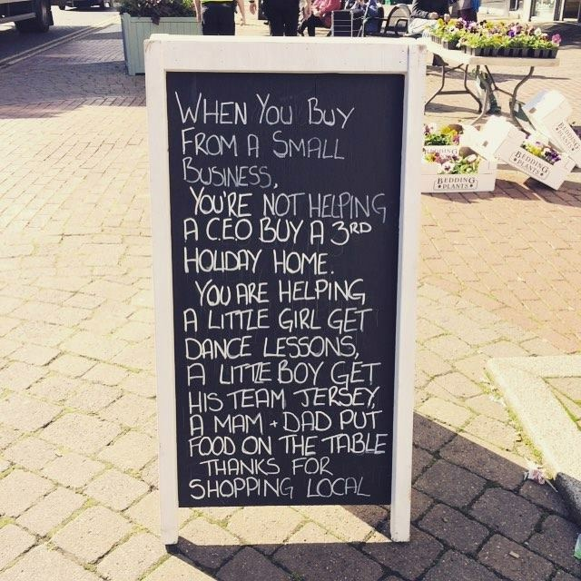
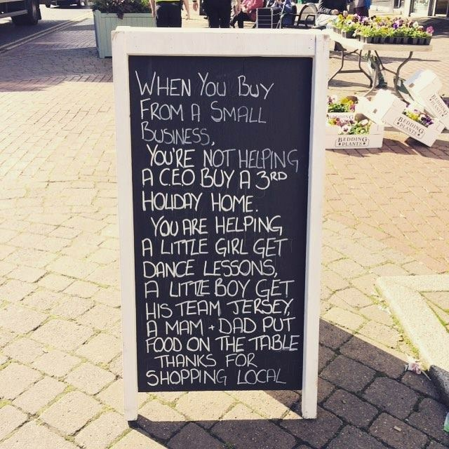

Welkom bij Frituur Sportcentrum Bart en Laura
Wie zijn wij?
De uitbaters van frituur sportcentrum Bart en Laura zijn een zeer vriendelijk koppel met veel kennis over hun beroep. Ze maken dan ook met veel plezier een pakje friet voor elke klant.

Waarom wij en niet de rest?
Frituur sportcentrum Bart en Laura is niet alleen een frituur dat goedgelegen is, het is ook heel unieke frituur. Ze zijn uniek omdat ze zich onderscheiden van de concurrentie doormiddel van hun speciale bakwijze. Ze bakken namelijk met vet i.p.v met olie. Waardoor dat elk pakje friet nog lekkerder zal zijn. Wat ook een groot voordeel is aan deze frituur is dat er zitplaats is zowel binnen als buiten. Je hebt er ook een heel uitgebreide keuze aan snacks en sauzen.


Waar zijn wij gelegen?
De frituur is goed gelegen omdat er een grote parking naast is en omdat ze naast het stadium van OHL gelegen zijn. Dus de supporters dat voor of na de match een pakje friet willen komen eten zijn altijd welkom.
 
